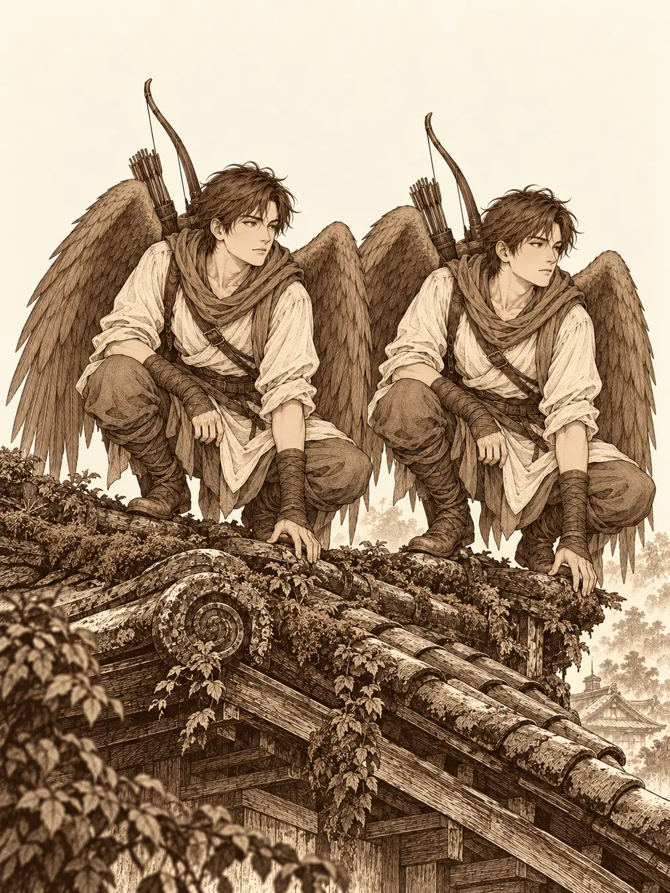

Capítulo 28
La venganza de los gatitos
Libro II · El favor del shogun
El último yokai del encargo yacía entre las raíces, y el Bosque del Infierno volvía a quedarse en silencio. Era un trabajo pequeño, veinte monedas por cabeza, de esos que se aceptan porque se pasa por allí. Hayate limpiaba sus flechas. Guxi probaba sus gafas nuevas contra la penumbra que empezaba a cerrarse bajo los árboles y comprobaba, satisfecho, que veía mejor. El enano iba ya pensando en unas pieles de ciervo con las que quería hacerse un tambor.
Entonces les llegó una música.
Venía de detrás de unas rocas, cerca del río: unos acordes lentos, graves, que parecían arrastrar los pies. Por detrás de la piedra apareció un hombre, un humano, con un laúd entre los brazos y la cabeza inclinada sobre las cuerdas, más pendiente de sus dedos que del camino. Avanzaba hacia ellos como si nada en el mundo pudiera darle una alegría.
"Infortunio", murmuraba. "Un destino tan aciago no puede ser bueno".
Hayate no se fió del todo, pero aquel hombre no llevaba armas en las manos y no parecía tener intención de atacar. El enano dejó de tocar lo que estaba tocando.
"¿Qué se le ofrece? ¿Qué hace usted en un bosque dejado de la mano de los dioses, lleno de yokai, a estas horas?".
"Todos estamos perdidos en algún momento de nuestra vida".
"Déjate de filosofía y dime tu nombre".
"Me llamo Hiki".
Y, al decirlo, se arrancó con un solo.
El enano sacó el tambor muy despacio, sin apartarle la vista. Lo miraba como se mira a un intruso en la propia casa. En aquel pueblo había poco sitio, le explicó, y él era el único bardo. O se dedicaba a otra cosa, o lo dejaban allí. Hiki le contestó con otra frase sobre el infortunio que lo perseguía. El enano pronunció unas palabras y el recién llegado se quedó inmóvil, paralizado a media nota, con los dedos todavía sobre las cuerdas.
"Aquí hemos terminado", dijo el enano, y se marchó.
Hayate y Guxi se miraron, apurados. Esperaron a que el hechizo se desvaneciera y, cuando Hiki recuperó el movimiento, le aseguraron que nadie iba a hacerle daño, que el enano era así, y que si quería podía venir con ellos a la taberna de Ukio. De noche y en aquel bosque no convenía estar solo. Hiki aceptó, y los siguió tocando una melodía aguda y tenebrosa que ponía la piel de gallina. De cuando en cuando, por el camino, la música se cortaba en seco, como si alguien hubiera echado un manto de silencio sobre ella, y al cabo de un trecho volvía a sonar.
Ya era de noche cuando se acercaron a Ukio, y lo primero que oyeron fueron golpes.
En la calle principal había muertos que caminaban. Zombis, docenas de ellos, arrastrando los pies entre las casas con los ojos encendidos de un morado sucio. Bill disparaba desde un portal. Cleo repartía hachazos con los dientes apretados. Zia se movía entre las sombras de los callejones y Romu sostenía la línea con su escudo. Algunos de ellos ya estaban heridos. Los vecinos huían como podían.
Y había gatos. Unos más pequeños, de dos colas, que se escurrían por las esquinas y desaparecían incluso cuando uno los estaba mirando. Y otros enormes, grandes como bueyes, que flotaban por encima de los tejados.
Hiki no esperó instrucciones. Caminó entre los cadáveres que se tambaleaban, tocó unas notas que vibraron en el aire hacia el zombi más cercano, y la criatura dio media vuelta y salió huyendo, derecha hacia Cleo. La halfling la partió de un hachazo. El bardo de la tragedia terminó su arpegio con unas palabras de ánimo bastante extrañas, que hablaban de mala suerte, y Guxi sintió que se le afinaba la puntería.
Hayate subió a los tejados. Desde allí vio la forma de un gato gigantesco, quieto, con los ojos brillando del mismo morado que los de los muertos. Guxi levantó el cañón.
Entre los muertos, un nekomata saltó sobre un vecino que había quedado acorralado contra una pared. Un zarpazo, y el hombre cayó al suelo. No se levantó. Más tarde moriría también una mujer. No era Lor Miau, que seguía en la base sobre su piano; estos eran otros.
Sirth estaba en mitad de la calle, junto a Shizuka, que peleaba con la espada envuelta en llamas y la cara manchada de sangre. El clérigo no se movió de su lado.
"Me quedo aquí", dijo. "Con la niña".
Se rodeó de espíritus guardianes, que giraban a su alrededor y laceraban a todo zombi que se acercara, y aguantó allí aunque le llovían golpes.
Fue una noche larga. Hayate estrenó el carcaj del shogun: la flecha salió de la cuerda envuelta en un relámpago y se clavó en un zombi con un chasquido azul. Guxi barría a los muertos con fuego y proyectiles. Cleo se abrió paso calle abajo. Romu empujaba a los enemigos lejos de sí y se curaba las heridas sobre la marcha, y Bill y Zia sostenían los otros frentes, uno con el arco y la otra cuchillo en mano, desde las sombras.
Los dos músicos no se soportaban, pero los dos trabajaban. El enano le dio a uno de los suyos un aliento de fuego para escupirlo contra los muertos. Hiki, cuando un compañero erraba el golpe, le concedía con unos acordes otra oportunidad, y repartía ánimo entre quienes más lo necesitaban. Se lanzaban miradas por encima de la refriega. Ninguno dejaba de tocar.
Los gatos eran lo peor. Los pequeños se escondían a la vista de todos y, cuando atacaban, lo hacían con las dos colas; uno de ellos azotó a Hiki y lo dejó paralizado, rígido como un poste en mitad de la calle. Los grandes volaban. Uno de ellos subió hasta el tejado donde Hayate se creía a salvo y lo atacó con las garras, y el arquero tuvo que envolverse en una protección sagrada que obligaba a cualquiera a pensárselo dos veces antes de golpearlo.

Sirth, rodeado y medio desangrado, se defendía con sus espíritus y con el látigo, que se volvía negro al restallar. Uno de los gatos gigantes pasó demasiado cerca de él. Los espíritus le corroyeron la piel, se le pudrió el pelo a jirones, y la criatura cayó al suelo medio deshecha. En ese mismo instante, a varios de los zombis se les apagaron los ojos. El morado se extinguió como una vela al soplarla, y los cuerpos se desplomaron, inertes. Eran solo cadáveres otra vez.
Los gatos los estaban controlando.
Guxi derribó a otro felino a tiros. Los muertos iban cayendo. Quedaba un último gato gigante, encaramado al tejado junto a Hayate, y quedaban unos pocos zombis con los ojos aún encendidos.
El enano miró al gato y algo se le iluminó en la cara.
"Me lo quiero llevar".
Recorrió el tejado con la mirada: tejas cubiertas de musgo, suciedad, hierbajos. Pronunció unas palabras, y entre las tejas empezaron a brotar plantas por todas partes. Eran hierba gatera. Al gato le cambió la expresión. Sirth, que lo había oído, le preguntó desde abajo qué demonios hacía.
"No me dejáis llevarme nada", protestó el enano. "Esta vez me lo llevo".
Cleo, que trepaba ya hacia el tejado con el hacha, se detuvo a medio camino al oírlo y la guardó, con la cara de una niña a la que acaban de prometer un oso de peluche gigante en la feria. Bill, desde lejos, seguía disparando sin haberse enterado de nada.
El gato miró a Hayate a los ojos. Maulló. Y empezó a cambiar. Imitó su postura, sus alas, su cara, hasta que en el tejado hubo dos Hayate agazapados uno junto al otro, y ninguno de los de abajo supo cuál era cuál.
"Yo soy el verdadero", dijeron los dos.
Guxi apuntó al que creyó que era el falso y falló. Disparó al otro y también falló, y menos mal. Shizuka se quedó mirando los dos arqueros con los brazos cruzados y decidió que uno de ellos era malo, y le gritó que volviera a su casa. Hiki lanzó una burla hiriente a la criatura, que se la sacudió como quien espanta una mosca. Hayate soltó una patada contra las tejas y una pequeña lluvia de rayos que salpicó al falso, que la aguantó sin inmutarse. La protección sagrada seguía impidiendo que nadie le acertara por error al de verdad. Romu se acercó y lo curó.
Sirth puso fin a aquello a su manera. Miró al gato y le habló con una autoridad que no admitía discusión.
"Ven, minino. Al suelo. Túmbate. Come toda la hierba que puedas".
Y el gato obedeció. Se puso a comer la hierba gatera del tejado con un ansia descontrolada. El enano se subió a su lomo, sacó el estoque, que guardaba aún en la hoja una última risa, y lo obligó a resistirse una vez más; el gato, drogado hasta las orejas, ya no pudo. Después el enano pronunció las palabras que le permitían hablar con cualquier criatura y se le acercó al oído.
"¿Quién es el mejor minino?".
El gato se dio la vuelta y se quedó panza arriba, con sus seis patas al aire, y el enano encima rascándole la barbilla con las dos manos. Era tan grande que uno podía tumbarse a dormir la siesta sobre él. Los ojos se le apagaron, dejaron de ser morados, y abajo, en la calle, el último zombi se desplomó como un fardo.
Uno de los cazadores recordó lo que se contaba de aquellas criaturas. Los bakeneko eran gatos que en vida habían sido, casi siempre, maltratados. Al cumplir cien años cobraban poderes: crecían, devoraban cuanto podían, adquirían una extraña afinidad con los muertos y eran capaces de dominarlos, y aprendían a imitar a cualquiera para confundir a sus enemigos. Qué le había pasado a aquel en concreto, nadie lo sabía. Lo examinaron buscando algún símbolo, alguna insignia que lo relacionara con Otakemaru, y no encontraron nada.
"Me lo quedo", anunció el enano. "Va a mi habitación".
"¿Y no será peligroso?".
Shizuka ya se había subido también a la panza del gato y se sujetaba a los pelos.
"¡Qué guay! ¡Otro gato!".
Hiki se alejó calle abajo, un poco frustrado, con el laúd colgado del hombro. Por todo Ukio salían los vecinos a ver lo que había pasado. Kitaro se secaba las manos en el delantal y miraba los cuerpos. Sirth, sentado en un escalón, se miró las heridas y dijo, sin dirigirse a nadie, que a ver si la próxima vez volvían antes, que mientras estaban fuera aquello había sido un infierno, que siempre tenía que encargarse él de todo.
Entre los curiosos llegó Hitoshi, el herrero, cargado con un montón de telas. Se quedó mirando al gato gigante con aprensión.
"Está tranquilo", le dijo alguien. "De momento".
"Eso espero, porque es muy grande". Dejó las telas sobre una barrica. "Te estaba buscando. He conseguido hacer algo con lo que me trajiste".
Eran cuatro capas, una por cada piel. La de los dodomeki, blanquecina con motas rojas, permitía volverse borroso por un instante, difícil de acertar. La que había hecho con el brazo cortado ayudaba a moverse sin ruido y a tener las manos más hábiles. La del trol desprendía alrededor de quien la llevaba un frío que mordía a todo el que estuviera cerca. La del oni, verdosa y azulada, cerraba poco a poco las heridas de quien se la pusiera. Decidieron guardarlas en la base y repartirlas cada vez que alguien saliera de misión, según quién fuera.
Las calles de Ukio quedaron cubiertas de cadáveres. Zombis, sobre todo, y algunos gatos, y algunos vecinos que nadie había podido salvar. En medio de todo aquello, sobre la panza de un bakeneko drogado que ronroneaba como un trueno lejano, un enano y una niña jugaban a cabalgar.